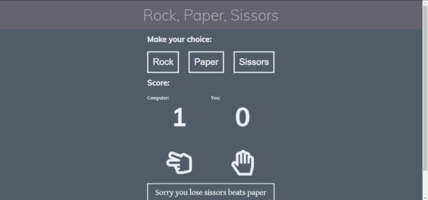

I started this project on January 3th 2019, and my reasoning for this decision is, that it is far
easier to stay commited to a project if everyone can keep an eye on you.
My plans for this project, is to learn a lot more about web development, especially using frameworks
like Vue and React for the front-end, and learn a lot more about back-end, mainly node.js, PHP and if I
got time, I would also like to get started on Python.
During this periode I will also be looking for work in web-development and web-design functions. So if
anybody know about some open positions, please feel free to contact me.
100 Days Of Code Project
The rules i will try to live up to for the next 100 days:
Code for minimum an hour a day
Tweet your progress daily with the hashtag: #100DaysOfCode
Each day, reach out to at least two people on Twitter who are also doing the challenge
If you are interested in the project you can find more information on their website
www.100daysofcode.com/
Diary
Day 44
Day off
I took a day off coding. I had a bad headache and were really
tired, so I thought it would be nice to get a little rest.
But I did not forget about javascript all together, I did watch a video
from CJ on the Coding Garden from this weeks stream, where he orders a pizza
using javascript.
Another project on FreeCodeCamp. This time a clock, that make it
easier to remember to take breaks when you are working.
Today I have made the layout and the CSS for the clock. The clock it self
will be made in React. I am getting more used to React, and it doesn't seem
so difficult now.
Day 42
16 of 16 tests passed
Finally I got all the tests passed. I only had to delete everything for the second time,
and start the component again, but this time I were successful.
Now I will get some rest and sleep, so I can be ready for another day.
Day 41
Starting over
Had to scratch everything from the last few days, besides for the layout
and style, to get the calculator to pass the tests on FreeCodeCamp.
So I finally got to try, for real, the usefullness of the Git branch. Have played
around with it before, but never really used it. But it is really a powerfull took,
and I will defently use it more in the future.
But never the less I still struggle with the tests, and have to continiue tomorrow.
Day 40
Pulling the rest of my hair out
This React is really messing with my brain. What is just straight forward
in vanilla javascript, is convoluted and difficult in React, or maybe it
is just me and my brain that aren't wired the right way for coding in React.
It always take me a little time to get in to the thought process. Maybe it is
because I switch a lot, and not focus on one thing, but I do like to do that,
and it makes everything more interessting.
And usually I always figure it out in the end. Not the most pretty and straight forward
methode, but hey, thats just me.
Day 39
FreeCodeCamp
A little break from Ruby. I do need to clear my brain, and what better
way, than to dive in to some javascript? I still need to finish 4 projects
on FreeCodeCamp's
Front End Libraries section to "get" my certificate, and as it happends one of
the projects is a calculator, and I KNOW how to make a calculator in javascript!
One little problem though, you need to use a library for theese projects, and they
only fully support React.js for the moment,
so I have to get in to the React way of thinking again.
And that is totally different form how anyhting else work, and it always meke my
head hurt.
But at least I were able to get the layout, "HTML" (jsx) and CSS to work today,
everything else have to wait for tomorrow.
Day 38
More Ruby
Still on the Ruby, and still confused. I thought it would be easier
to learn new, but it is quite hard. It is going to take some time to
feel safe coding Ruby.
Next on the Odin Projects is Rails, but I think I need to be a bit better ar Ruby first.
Day 37
Ruby
Dove deeper in to the basic Ruby, with a lot of reading,
and a lot of coding. But as usual when you learn a new programming
language, the coding in the beginning are "nonsense" like the usual
"Hello World", and a basic run down the syntax of the language.
By now I have only programmed in PHP and javascript, and there are a few
parts og these languages that are a little alike. But Ruby is a totally different
language, and it is going to take some time before I am any good at this, but for
every language you learn, it is getting easier.
Day 36
Finishing off the calculator
A lot of javascript and at lot of thinking today. Who knew
how much work there are in making your own calculator?
I also had a little time to start the Ruby part of the course on Odin Project,
but it wasn't much I got to read today.
Day 35
Calculator
Another project from the Odin Project. These projects are inbetween a lot
of theory, but the projects are more interesting to tell about, and here are a
something that can be shown off and tried.
This time it is a calculator. I have made one before in Vue, but this time it is in
vanilla javascript. Today I have spend my time with the HTML and CSS, so it is only
for the looks.
I will take care of the javascript tomorrow.
Day 34
"Etch-a-Sketch"
I am getting too old, or maybe it is the darkness in Denmark in the winter,
but I have been quite tired today, so I took another slow day.
Just a short javascript project building a small drawing app, where the user
can change color, change the size of the grid and reset the grid.
I am still facinated by javascript and the endless possibilities it gives. Only problem
is my lack of ideas for fun projects.
Day 33

Rock - Paper - Sissors
Still on the Odin Project, and their web developemnt 101 course. And another
dive into the interesting world of javascript.
Build a rock - paper - sissors game, first for the command like, and after that,
a visual repentation for the web.
Quite a fun experience. The final result for the web can be visited here.
Day 32
The Odin Project
Took a break for the big projects, and checked out the Odin Project.
They have a quite large course in webdevelopment. The reason for me to be interested in
this course, is that they focus on Ruby and Rails, where most other courses are "just" javascript, HTML and CSS.
These elements are also at Odin, but you don't see Ruby in many palaces.
Most of the day were spend installing the Linus distrobution xubuntu on a virtual machine on my laptop,
and getting that ready for development. Finally an excuse to look more into Linux.
First part of the course were about Git and Github, so I got a nice refresher course.
Day 31
Short Day
I have been to tired to code a lot today, but I added drag and drop
function to the cards on the trello clone.
Day 30
Card to the lists
Today I got cards added to the lists in the trello clone.
Now you can add tasks to the lists, so we are getting real close
to a functionel version.
Still some security to take care of, and a few functions still missing.
Day 29
Internet down all day
Not much coding done today. My internet connection has been down
most of the day. And it is amazing how much you use the internet when
you are coding. And it is quite hard to follow an online tutorial without
the internet 😉
Day 28
Trello clone - boards, and single board
After the login auth and set up of routes to sign-up,
login, and boards, and the basic set up of the functionality for the boards page,
and my first real attempt to work with vuetify.
First impression is that it is a lot like every other front-end frame work,
and I am not a huge fan of those. But it is quite well integrated in Vue,
and as I have mentioned before, it is really easy to make a good looking layout really fast.
On the other hand feathers.js are an amazing tool, and it really makes it easy to set up an API.
It takes all the "routine" setup for an Express server, and a database connection, and you just have to
make the models for the db. Not the last time I will use that.
I got set up and styled the boards page, and the single board page.
Day 27
Trello clone
Vue seems to have a magnetic effect on me, and I can't seem to stay away.
Still with my new favorite Youtube channel
the Coding Garden. This time it is a much larger project, building a clone of Trello.
I am using feathers.js as the foundation for the back-end, that are a RESTful API with a MongoDB database.
The front-end is as I said before, a Vue based app, and the styling is done with vuetify material design.
Today I got to set up authentication with feathers, make mongoose models for the user and boards
collections in the database. And made the login, sign-up and boards page.
Day 26
Couldn't leave it alone
Well I have been a bad boy. I couldn't leave the weather app alone, so I kept on going
with the tutorial.
Well to be honest I scrapped Bootstrap and made my own styles before I countinued with the tutorial.
Used darksky.net for the weather API. Works just great, and it is still quite easy and logical
to work with Vue.
Only problem with darksky's API is they don't get the location, just the timezone, so I had to find,
an API that could help me with that. Here I found OpenCage.com.
Very good API, can also get the coordinates from an adress, so I implemented that one too.
Finalluy I added vues geolocation package, so I can get the users current address.
All in all a great experience and you can see the final product here:
I wanted to make some more with Vue.js, so I found another tutorial on Coding Gardens
Youtube channal (link to Coding Garden in post from yesterday). This time a weather app made with Vue
and bootstrap.
This is absolutly not the first weather app I have made, but it seemed like a lot of fun, and most
important
it was with Vue.
And it was a lot of fun. Still have my doubt about Bootstrab, but it is just so easy.
Well tomorrow I better be a good boy, and get going with the wordpress site again, and wait till next
weekend to finish the weather app.
Day 24
Fullstack Message Board
I needed a break from Wordpress, so I found a great tutorial on the Coding
Garden
youtube channe on building a lfullstack message
board with node.js, express, MongoDB, Vue and Bootstrap.
It was really nice to get into javascript again. And I always enjoy to build something in node.js.
The backend for the app is build with express for the server. Mongo for the database and monk.js and
Joi.js for the
connection to the db and for some validation. I normally use Mongoose, but monk is quite easy to work
with, and I have to use that again.
The frontend i made with Vue.js. Everytime I use Vue I just get more and more happy to use it. It is
easy
to make something great, and with the @vue/cli tool, it is up and running in no time.
Bootstrat make a nice looking website really fast work, and it is easy to get a good result fast.
But I have to say, I do like to make my own CSS, but sometimes it is nice to cheat a bit.
Day 23
Slow day.
Today were a slow day, but I were too tired to take a full day of coding again.
Messed around with the archive pages, and got a few bugs fixed.
Started on the static pages, but I didn't have much energy, so they will have to wait a bit.
Day 22
Widget Area
Another really long day of coding today. Ended up on 13 hours. I have to take it slow,
for a few days afther this, or I will completly burn out.
But the day have been productive. I worked on the wodget area, added a new one, and got both
of them styles. I also got some basic styles added for the widgets, not much, but now they look
like they belong in the theme.
Found a great contact form, that also can work as a widget, so I can get the contact form in the
sidebar
on all the pages.
I also got time to work on the archive pages, added some style and got all of them looking good.
Day 21
11 hours of coding
Got and early start. Bagan coding at 7am, and had a really productive day.
Got the single post template under control, rearanged a lot in the base _underscore theme,
and got the style fixed.
Added a feature image for the posts, and made it show as full bleed, both on the single post page,
and on the index page, where all the posts are shown.
Day 20
Figthing with Wordpress
Wordpress is quite tricky today. And I have been considering to make a CMS myself
in PHP. It have been a while sinse I did that, but that is a big task to start,
and the client wanted a Wordpress site, so I better have to bite the bullet and keep
going.
But I do think I will make a CMS in PHP when I am done with this project.
Day 19
Menu and footer
Got the menu to do what I wanted. ANd now it is also fully responsive, thanks to some
jQuery "borrowed" from the twentyseventeen theme, but it works, and it is looking ok.
The footer is also done, styled and made responsive. Quite a bit easier than the menu.
Tomorrow starts the part I am dreadding the most. Create and style the static pages. Still not
sure how to deal with them, but as always it will be just fine.
Day 18
Menu problems
Finished this iteration of the header, and got it fully responsive with some media queries.
The menu is still making problems, but the lynda tutorial is a great help. Got the menu styled
to use the theme colors, and used flexbox for the base layout. Now I just need to make it fully
responsive
with some javascript and some more SASS.
Day 17
Header and menu in Wordpress
Coded and styled the header for the theme, got the logo inserter, and working from
the Wordpress back-end. Header layout is made with flexbox, and it were quite ease to make
it look as I wanted.
On the other hand, the menu is costing some problems. It is quite hard to make it do as I want.
The biggest problem is, that I want to make the back-end work as mormal in Wordpress, eventhough
the client have no reason to make any changes in the layout, but I feel it would be a lot nicer,
if everything Wordpress works as intended.
Day 16
Just Wordpress
Worked on the course on lynda.com
in building themes for WOrdpress
Day 15
Wordpress Theme from Scratch
Today I was contacted by a local company, that I have woeked for before, and asked if I
can turn their website in to a Wordpress site, so they them self can add news, and post photos
from their production.
I have just briefly worked with Wordpress, and just by crating simple pages, and a child theme.
So the whole thing in quite new to me, but I took it as a challenge, and started a course
in building Wordpress themes using the underscore theme.
I a quite sure that this project will keep me busy for a few days, but I am learning a lot.
Day 14
Node API for a todo list
First time I ever made a RESTful API in node.js, I have to say,
I didn't understand much. Maybe the teacher were bad, or I were just to dumb to understand.
But now, after I have made 8 - 10 of them, some in connection with some tutorials, and a couple from
scratch,
I have to say the logic is starting to make sense.
Today, working on web-dev bootcamp on Udemy, I made an API, with node.js, mongoDB, mongoose.js and
express.js, for a todo list. (You have to make one atleast once every 3 months :))
The front-end is made in HTML, CSS and Jquery. Forst time I have made a whole front-end in JQuery,
usually I have made it in a framework, and mostly Angular, but it was a nice change.
My experience in JQuery before this were quite limited, but it is really easy to work with, and I
think I will try to use it some more.
If you are interested, you can find the code on my Github.
And it were the hard parts of javascript on the program for today.
Closures and the This keyword are hard to understand in theory. And I have to admit that I will have
to spend more time on the theory. But in use eg in React or Vue, it just flow, and then I think I do
understand.
The courses age shows when it comes to the chapter on orient objected programming, where it is about
prototype and constructor functions,
and no mention of the ES6 Class part.
Day 12
Finishing up CSS Grid Course
Just done the last few chapters in Wes Bos CSS Grid course, and all I have to say is,
that if you are working with frontend development in any way, and not are sure how to work
with the grid, this course is a great intro, and it
is also FREE, so it is a no-brainer.
Day 11
More CSS Grid
Still working on the CSS Grid course, and are learning a lot.
Still impresses me how far CSS have come, just from a few years ago,
where we fought with floats, and had very big problems to get the layout to be just right.
And I have never been really for css frameworks lige Bootstrao of Foundation, because you add so
much code that you never uses. But the were/are nice to use when you just want to make a quick
prototype.
Every since I first saw a demostration on the Grid, I have been blown away. I have been making
websites, as a hobby
since 1998, when you had a really limited way of styling the pages. The first website i made, I had
frames to split up th sections, and then placed
the different elements in a table layout. Pure hell.
Now you can make a layout with a few lines of code, and on top of that, it is responsive from the
start.
Day 9
Advandced Array Functions in javascript
For some time ago i entered The Advanced Web Developer Bootcamp on
Udemy.com, and I have been going through and from
this course ever
since.
But since this course containg a large section covering D3.js, and I want to learn more about that, for
my progerss on
FreeCodeCamp, I decided to return to this course.
And instead of skipping to the D3 part, I picked up where i were in the course. So today have been all
about map(), reduce(), filter(), some(), every() and forEach()
in javascript.
Worked on the javascript for this page all day today.
Made a sticky navbar, a little function to show the remaining days of the project and finished of with
a smooth scroll function
for the page, all made in vanilla javascript.
After the javascript were done, I finished the last content for the page, nad got it uploaded on
github pages.
Day 6
Back to FreeCodeCamp
Today I continued on the freeCodeCamp.org Data Visualization Certification
and I finished both the D3 section and the JSON APIs and AJAX section.
Now I just have to finich the projects, but I will do them a bit later.
I still have 4 projects left to do in the Front End Libraries Certification course, but desided to
save them for later, and start on
the Data Visualization Certification, and got to learn about D3.js, a new area of knowledge for me.
Got through the first half of the D3 section.
Day 4
Video and blog page
Worked got the most of the styles on on the blog page, and then cheated
for the rest of the day, just watching videos on Youtube.
Also a channel I really like, and both Daniel
Shiffman and
CJ are great teachers. i do learn something every time I watch one of thier videos.
Day 3
More SASS
Worked some more on this blog page for the project.
I still find it rewarding to work with the styling of a web page, and SASS just make it more fun.
And I am still impressed of flexbox and grid. These tools makes the layout so easy to make compared to
the floats and
css frameworks that I do not like at all.
Day 2
Javascript Image Carousel
Found a great tutorial on Kevin
Powels youtube channel
building an Image Carousel in HTML, CSS and Vanilla Javascript